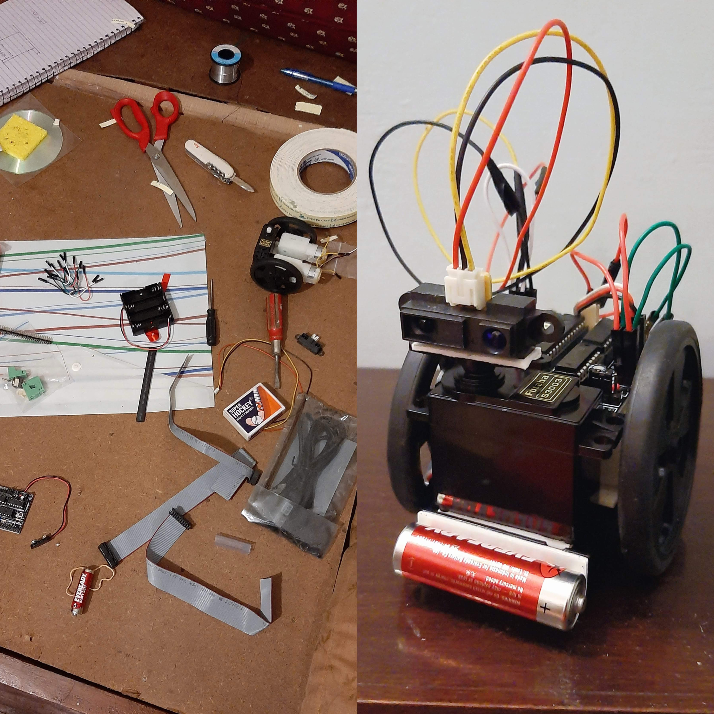

Founded as a new student and managed virtually. Built a team of four people based on their concentrated interests. Kept the team motivated despite the time-consuming pressures of college applications and academics. Built by reasoning up from First Principles. Initiated my school’s first-ever participation in the National Space Society Space Settlement Contest.
Frank the Robot
Built in the 10th grade. Programmed in PICAXE BASIC.

Academics
SAT - 1520
Math - 790 English - 730 Taken in the August of 2021.
First attempt with one practice test. Suffered in the Reading portion due to time management.
Hafiz
I spent eleven months (from August 2019 to July 2020) memorizing the Quran. I completely dedicated all of my time to this and it is, as of yet, the most difficult thing I have ever done.
Skills
C++, HTML, Javascript
I successfully managed the sale of my parents' home over the phone, overcoming challenges including negotiating with an aggressive tenant (who had “trashed” the house and initially refused to leave), and handling a faulty furnace in a below-freezing winter. Basic renovations were done at less than one-tenth of estimated cost. Overall, saved hundreds of thousands of dollars.
Languages
English and Urdu are my native languages. I can also semi-fluently speak Hindi and am able to understand Punjabi.
Hobbies
I enjoy reading and weightlifting. I went on a two-month-long bulk each in 2022 and 2023, and was able to gain an almost unrealistic 62 pounds of muscle (from 129 to 191 pounds).
Fun fact about me: during my teenage years, I dedicated myself to becoming a professional mixed marital artist.
I was born in Lahore, Pakistan in 2002.
I mostly grew up in Lahore, however, a significant portion of my childhood was also spent in (Chicago) Illinois, and Minnesota.